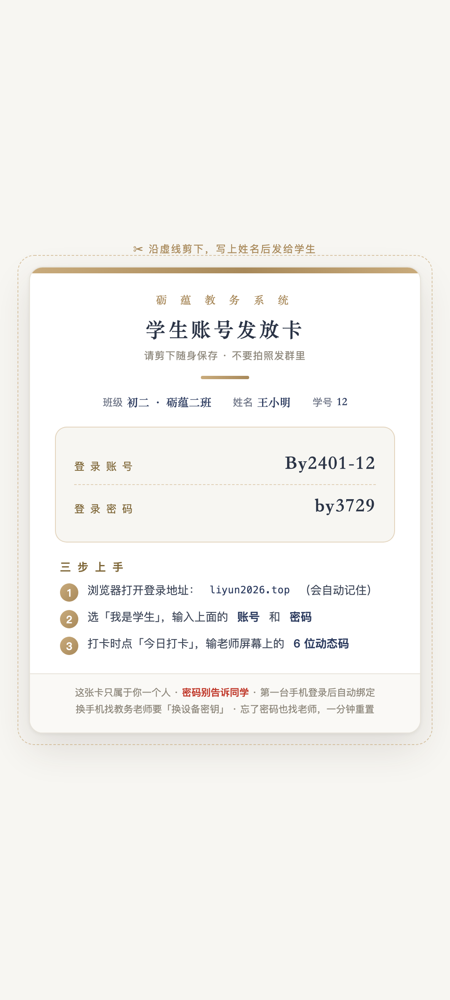
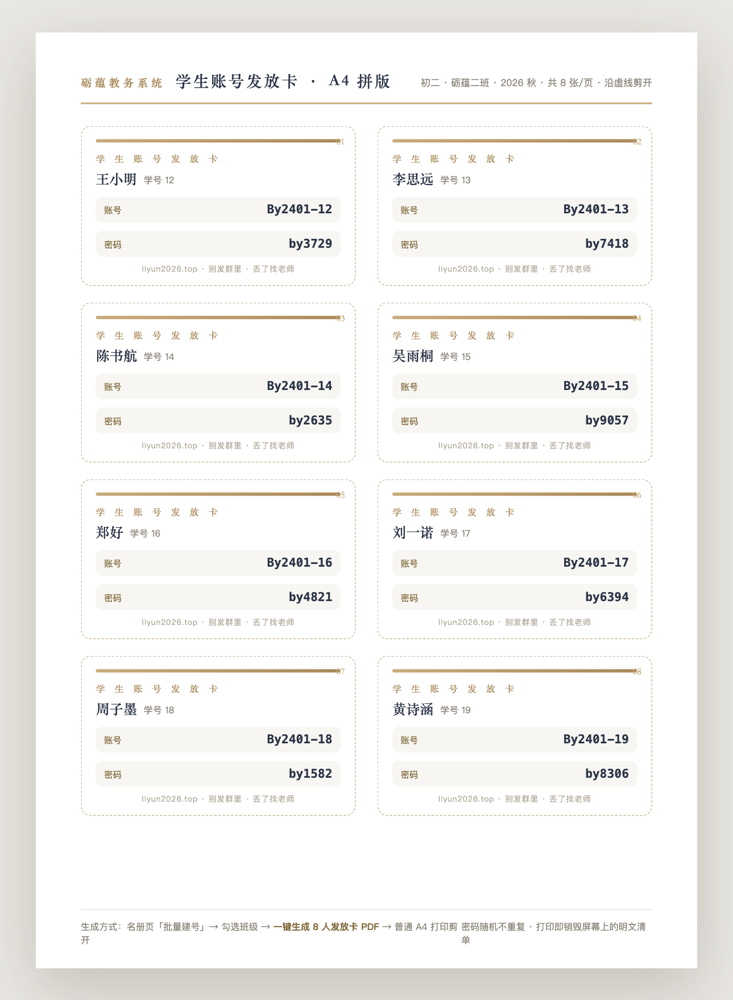
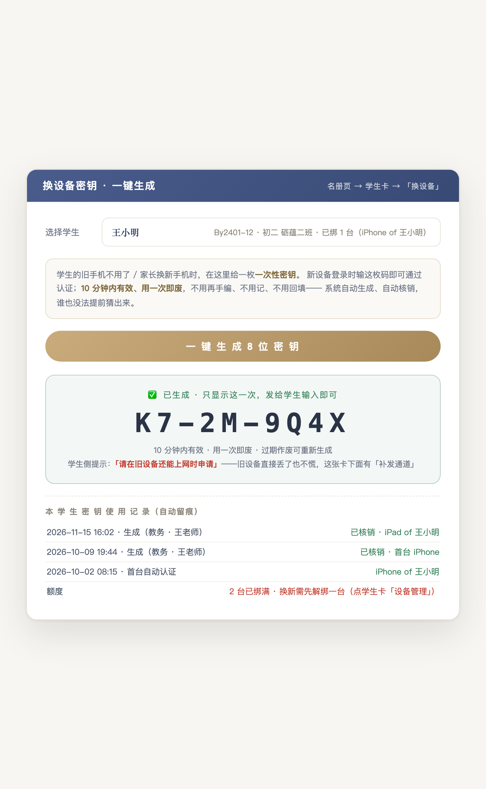
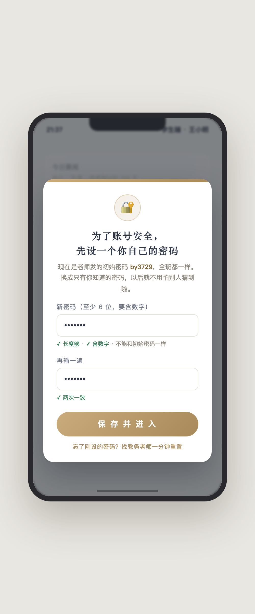
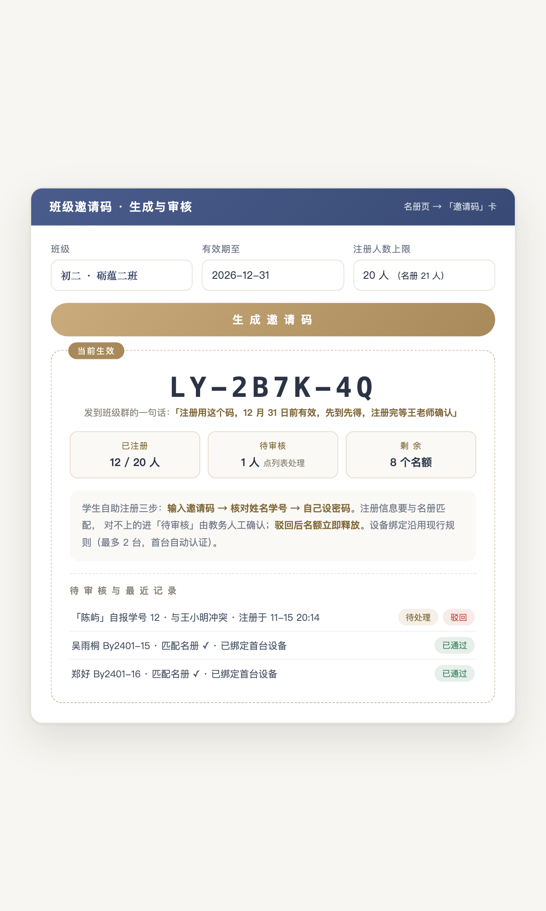
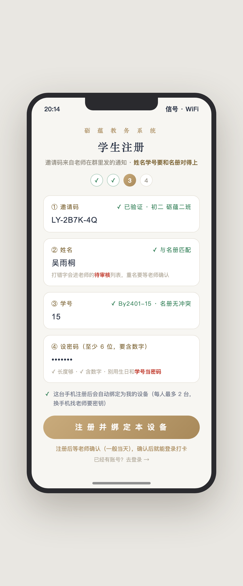

针对现状「初始密码留空 = 全班统一 liyun2026」的安全隐患，给出 A / B / C 三个可选方案。 A 一人一密 + 发放卡是推荐项：批量建号自动生成「班级码+学号」账号与每人随机好念密码， 一键打印 A4 发放卡，56 人一次建号约 10 分钟；B 在 A 之上加首登强制改密（更稳但多一步学生门槛）； C 走邀请码自助注册（教务最省但引入审核与乱注册兜底负担）。
| 场景 | 方案 A 的工作量 |
|---|---|
| 56 人批量建号 | 选班级 → 点一次 → 打印 7 页 A4 → 剪卡发卡，全程约 10 分钟（密码生成/去重/账号防撞全自动） |
| 换设备（预估 2-4 次/月） | 学生卡点「一键生成密钥」+ 口头告知，约 30 秒/次（现为手编密钥约 2 分钟且要记录传达） |
| 忘密码（预估 3-5 次/月） | 点「重置」+ 告知新密码，约 20 秒/次；无需知道旧密码 |
| 日常维护 | 零：无审核列表、无有效期管理、无改密纠纷（密码丢了就重置） |
| 防线 | 方案 A 强度 |
|---|---|
| 密码层 | 强：56 人 56 个独立随机密码；同学互猜成功率从「100%（全班同码）」降到「1/9000 且有登录频控」；账号规则可预测（By2401-12）但密码不可预测，二者分离正是设计意图 |
| 设备层 | 强：沿用最多 2 台 + 首台自动认证；换设备密钥改自动生成后，消除了手编密钥的弱口令/复用风险与人工记录泄露面 |
| 动态码层 | 强：30 秒轮换 + 位置校验不变——即使密码+账号双双泄露，异校区的冒用打卡仍会被位置拦下 |
| 攻击面残余 | 家长群转发发放卡 → 单个账号泄露（影响面 1 人，教务可重置）；账号借用代打卡 → 被动态码+位置限制，与现状一致不恶化 |
| 位置 | 改动 |
|---|---|
| 名册页 · 批量建号 | 账号自动编号生成器（班级码映射 + 学号）；随机密码生成器（by+4 位，字符集去易混淆、去重）；「统一初始密码」输入框退场 |
| 名册页 · 新增「发放卡」卡 | A4 PDF 生成（8 张/页拼版、裁切虚线、三步上手文案）；按班级/按选中人两种出卡 |
| 名册页 · 学生卡 | 「一键生成换设备密钥」（8 位随机 + 10 分钟有效 + 用后即废 + 留痕列表）；「重置密码」按钮 |
| edge-functions sync.js | 密码哈希存储（现行为保持）；新增 device_key 生成/核销 action；reset_password action（仅 super/教务） |
| 登录页 | 账号输入自动纠错提示；密码错误 N 次频控提示文案 |



| 维度 | 方案 B |
|---|---|
| 教务工作量 | 建号/发卡与 A 相同；忘密码重置后学生还要再设一遍，教务要多交代一句话；月度维护与 A 持平 |
| 学生体验 | 首登 3 步（登录 → 设密码 → 进入）；中小学生「设一个记得住的密码」失败率不低——两次输入不一致、设完就忘是高频卡点；家长代设后学生不知道 → 变相回到「找老师重置」 |
| 家长沟通 | 需要在群里提前说明「第一次登录要自己设密码」，否则首日集中卡在改密页 |
| 位置 | 改动 |
|---|---|
| 学生端 · 登录后拦截层 | mustChangePassword 标志：为真时全页遮罩 + 改密弹窗（不可关闭），改完置假；对应样张 B-①（390 手机版式） |
| edge-functions sync.js | change_password action（校验旧登录态 + 新密码规则 + 弱密码黑名单）；重置后置回 mustChangePassword |
| 名册页 · 学生卡 | 重置按钮文案改「重置为初始密码（下次登录需重设）」 |
改造增量：约 1 个拦截组件 + 1 个接口 + 状态字段，在 A 完成的基础上 +0.5~1 天。

| 场景 | 方案 C 的工作量 |
|---|---|
| 建号 | 生成 1 枚码 + 发群里，约 2 分钟；但 56 人分多个班则每班一枚；收尾还要处理审核列表 |
| 审核（预估首周集中 20-40 条） | 匹配通过的自动过；冲突/乱填的逐条人工判，约 30-60 分钟/班（集中在启用首周，之后趋零） |
| 换设备 / 忘密码 | 与 A 相同（重置在审核列表之外另有入口） |
| 日常维护 | 有效期/名额到期管理、转发扩散后的名额挤占、每个新学员cycle都要重发码——长尾心智负担高于 A/B |
| 防线 | 方案 C 强度 |
|---|---|
| 密码层 | 强：学生自设且无初始密码外流窗口；规则同 B（≥6 位含数字），弱密码风险与 B 相同，可加黑名单兜底 |
| 设备层 / 动态码层 | 与 A/B 完全一致 |
| 新攻击面：身份冒领 | C 独有——邀请码一旦在群里扩散，任何拿到码的人可「自称姓名学号」抢注真实学员身份；兜底 = 名册精确匹配自动过 + 冲突进待审核人工仲裁 + 驳回释放名额；但「精确匹配成功」的冒领（知道真实姓名+学号的同班同学）无法自动识别，只能靠设备层（2 台）与动态码层兜底 |
| 位置 | 改动 |
|---|---|
| 登录门外 · 新增注册路由 | 独立注册页（四步表单：邀请码/姓名/学号/设密码），邀请码实时验证、名册实时匹配提示、设备绑定须知勾选——样张 C-② |
| 名册页 · 新增「邀请码」卡 | 生成（班级/有效期/上限）、当前码展示、已用/剩余统计、复制一句话群发文案——样张 C-① |
| 名册页 · 新增审核列表 | 待审核红点 + 逐条通过/驳回（驳回释放名额）；通过即建号并继承名册班级映射 |
| edge-functions sync.js | invite_codes 键（码/班级/有效期/上限/已用）、register action（匹配校验 + 待审核态）、approve/deny action（仅教务） |
| 名册页 · 批量建号 | 保留（给转学生/插班生用，与邀请码并存） |
改造增量：1 个新页面 + 1 张卡 + 1 个审核列表 + 3 个接口，是三案中页面改动最多的，约 2.5~3.5 天。


| 维度 | A 一人一密发放卡 | B 首登强制改密 | C 邀请码自助 |
|---|---|---|---|
| 初始密码隐患 | 根除（随机唯一） | 根除且外流窗口趋零 | 根除（自设） |
| 教务建号操作 | 10 分钟（打印发卡） | 同 A | 2 分钟+审核 30-60 分钟/班 |
| 学生上手步数 | 2 步 | 3 步（多设密一步） | 4 步+等待审核 |
| 首日现场压力 | 最低（发卡即用） | 中（课堂讲一遍改密） | 中（答疑+催审核） |
| 月度运维 | 零流程（只有重置） | 重置频次略高 | 有效期/名额/审核三件套 |
| 密码层强度 | 强（随机） | 强+（外流窗趋零，弱密码靠素养） | 强+（自设，弱密码同 B） |
| 新引入攻击面 | 卡外流（影响 1 人可重置） | 弱自设密码 | 身份冒领/名额挤占 |
| 改造工作量 | 1.5~2 天（名册页为主） | A + 0.5~1 天 | 2.5~3.5 天（新页面+审核链） |
| 适合场景 | 当前 56 人规模 + 培训机构节奏 | 家长群转发顾虑极重时 | 学员频繁流动/大规模招生时 |
主场景推荐 A：56 人规模下「10 分钟建号 + 打印发卡」的一次性成本最低，三层防线即刻拉满，日常运维只剩「重置」一个动作；换设备密钥自动化（A 内含）顺带修掉了现行手编密钥的薄弱点。
若主理人特别在意「初始密码被拍照留存长期沿用」，可 A+B 组合（在 A 上线稳定后追加，+1 天）——发放卡上的密码变成「一次性开局密码」，长期凭证只存在学生脑子里。
C 建议缓行：它的省力红利要在大规模、高流动招生下才成立；当前 56 人 + 家长 involvement 中等的形态下，审核心智与冒领兜底反而是净增负担。等二期扩班（>150 人）再启不迟。
三方案均已给出全链路流程、工作量、体验、安全、风险与改造清单，
样张按白卡浮影风格真实渲染（含 8 张 A4 拼版与三列对照图）。
主理人按自身情况选定后，即可按对应「改造点清单」排期施工。